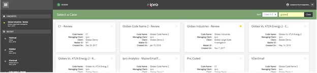
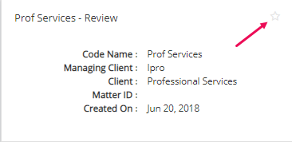

The initial Review home page, as shown in the figure below, consists of the:
Favorites and Recent panel: Access user-defined favorites or the most recently accessed cases.
Sort Case/Client Options: Sort cases or clients A to Z or Z to A
Case/Client Search Bar: Manually enter a case/client name
Case Cards: Displays case name, code name, managing client, client, matter ID, and creation date.

When a case card is selected, the Funnel graph and Review Passes display as shown in the following figure:
The Funnel graph depicts the number of case documents that are loaded, in review, and produced. Each Review Pass depicts the percentage of documents reviewed, a progress bar, the review pass name, and the total number of documents.
|
|
Note: To close the funnel graph, click
|
|
|
Note: If the status for a case is changed to inactive or user permissions for the case are removed, the case is automatically removed from the Favorites list. |
Favorites are placed under the Favorites case list in the left pane in alphabetical order.
You can have an unlimited number of favorites. Any case that was previously displayed in the Recent Case list and is marked as a favorite case subsequently, that case will no longer display in the Recent list. If the case is removed as a Favorite, it will be placed back in the Recent Case list.
A case is marked as a favorite by:

|
|
Note: If the star appears filled in , the case is already assigned as a favorite. |
A case may be removed as a favorite by:
Clicking next to the Case name in the Favorites list located in the left pane.
Clicking in the Case card.
A confirm prompt appears. Click OK.
Click ECA & Review
on the
To sort by case or client, click the Sort down arrow located on the right side of the ECA & Review home page to display the sort options. Sorting does not impact the Favorites and Recent lists.

Choose a sort option.
Click ECA & Review
on the
To search for a case or client, enter the case name or client name in the Search field as shown here:
Click Clear to clear the Search field

 in the upper right corner.
in the upper right corner.